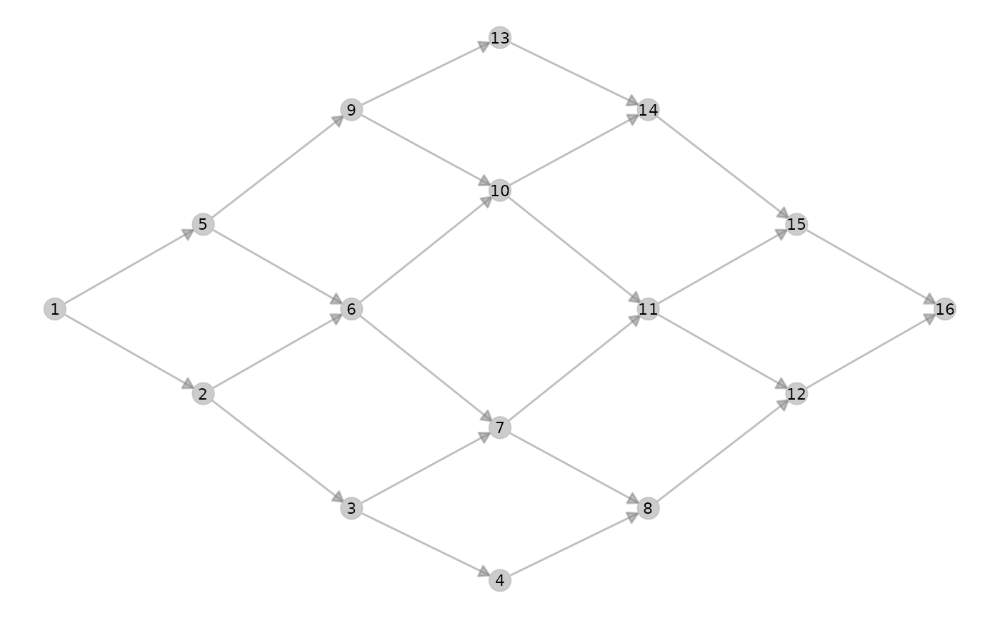

Method executing the whole metanetwork pipeline, including building 'metanetwork' object (build_metanet,append_agg_nets, compute_TL,
attach_layout)
metanet_build_pipe(
metaweb,
abTable = NULL,
trophicTable = NULL,
compute_local_nets = TRUE,
verbose = TRUE,
beta = 0.1
)metaweb of the metanetwork, object of class 'graph', 'matrix', 'data.frame' or 'dgCMatrix'. Metaweb needs to be directed and connected. This parameter must be non-null.
abundances of nodes in local networks, matrix of class 'matrix', columns must have names corresponding to node labels of the metaweb, rows are node abundances in local networks. Default is null, in that case, uniform abundances are assigned
a 'matrix' or 'data.frame' indicating hierarchy of the nodes. Names of the columns correspond to the different resolutions. It indicates the membership of each node of the metaweb. Default is null.
a boolean, indicates whether local networks must be computed or not.
Default is TRUE
a boolean indicating whether message along the pipeline should be printed
the diffusion parameter of the diffusion kernel, a positive scalar controlling the squeezing of the network
object of class 'metanetwork', with computed layout stored as node attribute
library(metanetwork)
library(igraph)
g = make_lattice(dimvector = c(4,4),2,3,directed = TRUE)
meta0 = metanet_build_pipe(g)
#> building metanetwork
#> computing trophic levels
#> attaching layout for beta= 0.1
#> Warning: nodes of metaweb do not have names. Assigning integers as names
#> attaching TL-tsne layout for metaweb_
#>
#> beta = 0.1
#> beta = 0.1
#> Epoch: Iteration #100 error is: 431.402455891914
#> Epoch: Iteration #200 error is: 101.980051216508
#> Epoch: Iteration #300 error is: 101.980051216652
ggmetanet(meta0)
#> mode is TL-tsne
#> Warning: node.size is invariant; size.cut ignored
